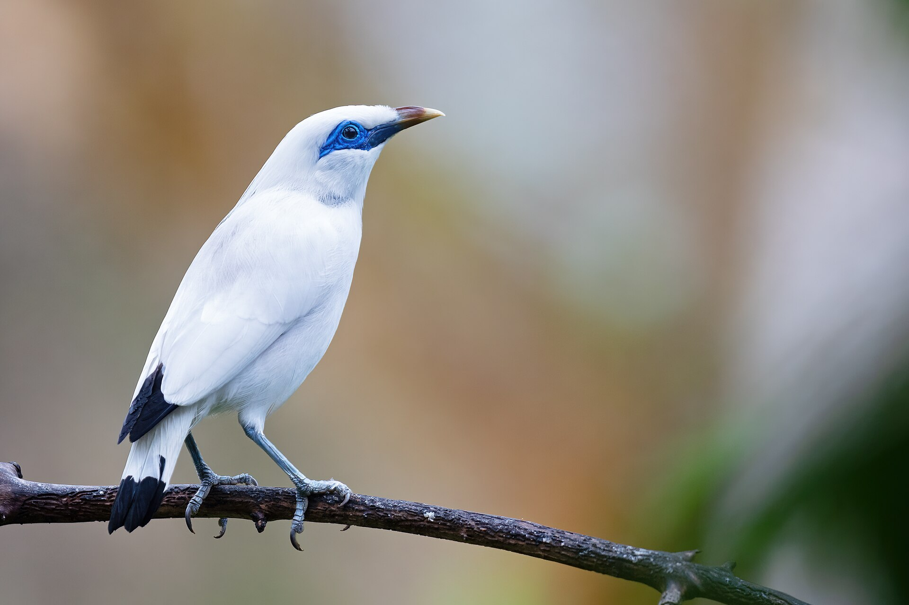

Selamat Datang
Indonesia adalah rumah bagi ratusan jenis burung endemik, yaitu burung yang hanya ditemukan di wilayah tertentu di Indonesia dan tidak ada di tempat lain di dunia. Website ini memperkenalkan beberapa di antaranya dan mengajak pengunjung ikut melaporkan penampakan burung di alam liar.
